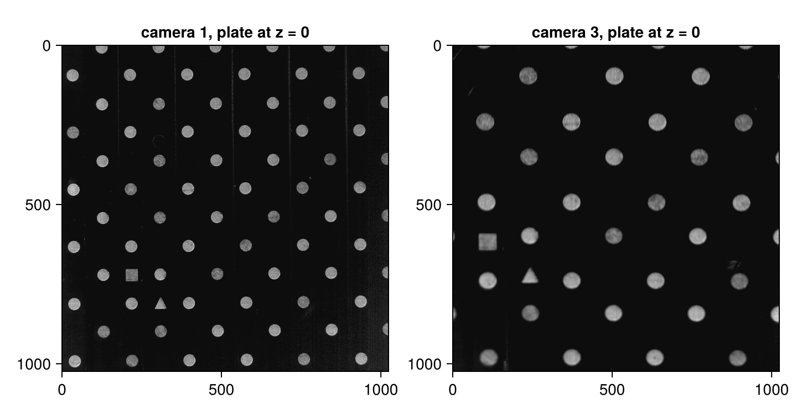
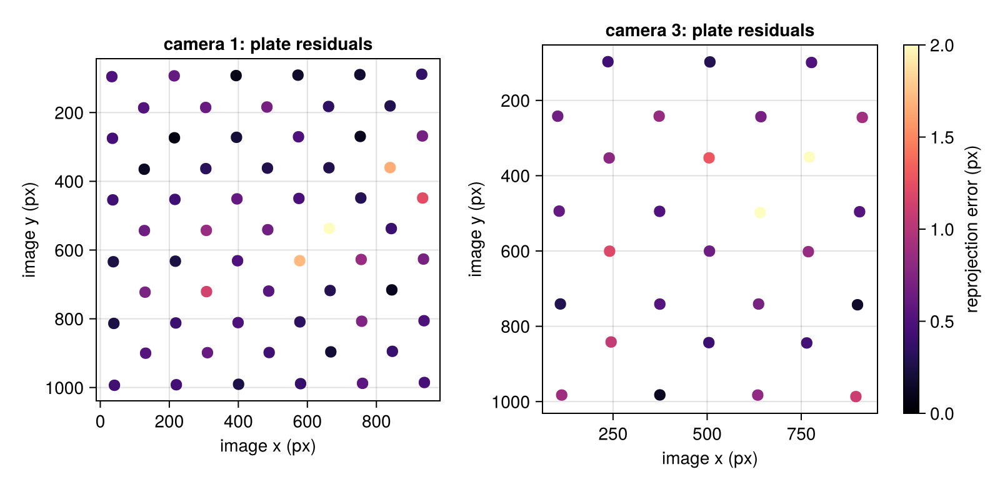
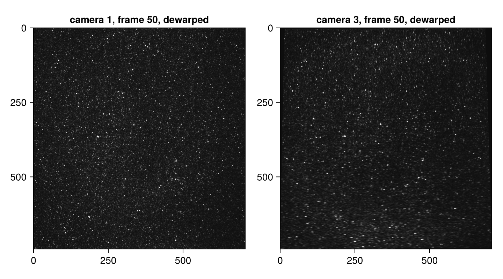
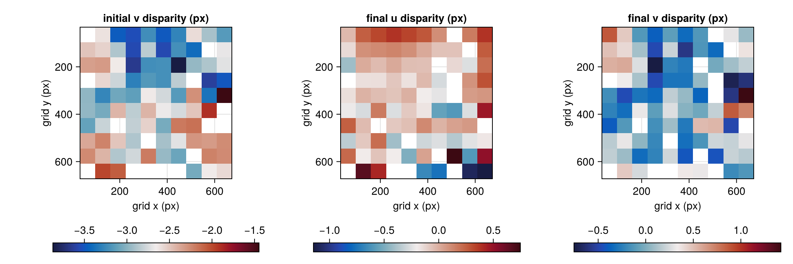
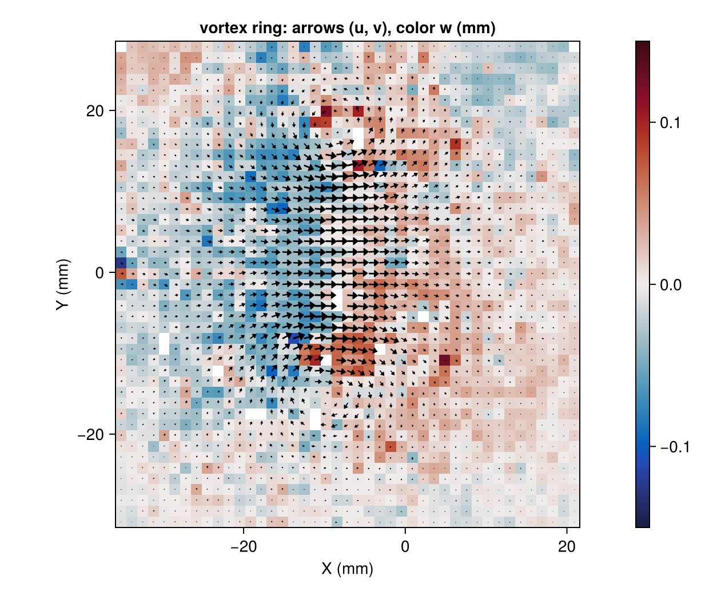

Stereo on a real recording: vortex ring
This tutorial uses a physical calibration plate and two camera recordings to calculate a three-component velocity field. You will inspect the calibration residuals, check self-calibration against its pass-by-pass results, and assess the field using its uncertainty estimates. The synthetic stereo tutorial introduces the same analysis chain.
The data is case E of the 4th International Particle Image Velocimetry (PIV) Challenge (Kähler et al., 2016): a vortex ring at Reynolds number $Re \approx 2300$, recorded time-resolved by R. R. La Foy in the AEThER laboratory at Virginia Tech. We use the two cameras distributed to the Challenge participants: camera 1 views the light sheet head-on. Camera 3 is pitched about 25° about the horizontal axis and uses a stopped-down aperture for focus because it has no Scheimpflug adapter. Both are 1024 × 1024 px high-speed cameras running at 1000 Hz (consecutive frames are 1 ms apart). Here we use calibration plate images at three traverse positions and two consecutive particle frames per camera.
using Hammerhead
using Statistics: median
dir = joinpath(pkgdir(Hammerhead), "test", "reference_images", "E")
plate(cam, k) = load_image(joinpath(dir, "E_camera_$(cam)_z_$(k).png"))
frame(cam, f) = joinpath(dir, "E_camera_$(cam)_frame_000$(f).png")
using CairoMakie
let
fig = Figure(size = (720, 380))
for (i, cam) in enumerate((1, 3))
ax = Axis(fig[1, i]; title = "camera $cam, plate at z = 0",
yreversed = true, aspect = DataAspect())
image!(ax, plate(cam, 4)'; colormap = :grays)
end
fig
end
The LaVision Type #21 plate has dots every 15 mm on each level, with the back level 3 mm behind the front. A filled square marks the origin and a filled triangle gives the orientation. Camera 3's higher magnification leaves fewer dots in view than camera 1.
Detect the plates and calibrate
The plate was traversed through seven Z positions at 1 mm spacing. We use planes 1, 4, and 7 (z = −3, 0, +3 mm), spanning the full traverse range and providing the three planes required by the default Soloff model. The origin_offset (the origin dot sits 30 mm right of and 7.5 mm above the square marker) comes from the experiment's documentation and is needed to place both cameras in the same world frame:
zs = [-3.0, 0.0, 3.0]
detect(img) = detect_calibration_grid(img; spacing = 15.0,
two_level = true, level_separation = 3.0, origin_offset = (30.0, 7.5))
grids1 = [detect(plate(1, k)) for k in (1, 4, 7)]
grids3 = [detect(plate(3, k)) for k in (1, 4, 7)]
(cam1 = [length(g.pixels) for g in grids1],
cam3 = [length(g.pixels) for g in grids3],
markers = all(g -> g.square !== nothing, [grids1; grids3]))(cam1 = [61, 61, 61], cam3 = [28, 28, 24], markers = true)Camera 1 sees 61 dots on every plane. Camera 3 sees 28 on the first planes and fewer on the last, where some edge dots leave the view. Each calibration fit uses the dots detected on its planes:
cam1 = calibrate_camera(grids1, zs)
cam3 = calibrate_camera(grids3, zs)
(quality1 = calibration_quality(cam1, grids1, zs),
quality3 = calibration_quality(cam3, grids3, zs))(quality1 = (rms = 0.6536067393846149, max = 2.2157828025171487, n = 183), quality3 = (rms = 1.0880213068017788, max = 3.3677237421216404, n = 80))The summaries report the size of the reprojection error. Plot the errors at the detected dots to see whether they cluster near an edge, grow across the field, or recur at the same plate locations. The color is error magnitude in pixels for the z = 0 plate, on a shared scale:
let
fig = Figure(size = (800, 390))
for (i, (cam, g)) in enumerate(((cam1, grids1[2]), (cam3, grids3[2])))
pixels, world = calibration_points(g, 0.0)
residual = [hypot((world_to_pixel(cam, w) - p)...) for (p, w) in zip(pixels, world)]
ax = Axis(fig[1, i]; title = "camera $(i == 1 ? 1 : 3): plate residuals",
xlabel = "image x (px)", ylabel = "image y (px)", yreversed = true,
aspect = DataAspect())
scatter!(ax, first.(pixels), last.(pixels); color = residual,
colorrange = (0, 2), colormap = :magma, markersize = 13)
end
Colorbar(fig[1, 3]; colorrange = (0, 2), colormap = :magma,
label = "reprojection error (px)")
fig
end
The RMS values are about 0.7 and 1.1 px here. A repeated dot-level pattern across plate positions can suggest a target-position error, but it does not establish the cause: camera-model limits, refraction, indexing, and detection should also be checked. Compare the residual plots across all three planes if a fit looks suspicious. See Calibrate a real stereo rig for further checks.
A common grid from the stereo overlap
Dewarp both cameras onto the part of the z = 0 world plane that they can see together. common_dewarp_grid projects each camera's image border to that plane and intersects the footprints; camera 3 sets the limits here. With spacing = :auto, grid spacing matches the coarsest camera's resolution. Its y range comes out descending, so the dewarped image displays upright (world +Y up); PIV downstream is orientation-agnostic because dv * step(y) carries the sign (see Stereo geometry and self-calibration).
grid = common_dewarp_grid((cam1, cam3), (1024, 1024), 0.0)
dw1 = ImageDewarper(cam1, grid, (1024, 1024))
dw3 = ImageDewarper(cam3, grid, (1024, 1024))
gridDewarpGrid(x = -36.47844857154391:0.0834928:22.550934818257176, y = 29.18195279793214:-0.0834522:-32.65615414583456, z = 0.0)The union mask dw1.mask .| dw3.mask marks grid nodes either camera cannot see; because the grid is the overlap bounding box (not the exact overlap polygon), a few corner regions are masked. Everything downstream excludes them automatically. Here is the same instant through both cameras, dewarped onto the shared grid:
A1 = load_image(frame(1, 50))
A3 = load_image(frame(3, 50))
let
fig = Figure(size = (720, 400))
for (i, (cam, dw, img)) in enumerate(((1, dw1, A1), (3, dw3, A3)))
ax = Axis(fig[1, i]; title = "camera $cam, frame 50, dewarped",
yreversed = true, aspect = DataAspect())
image!(ax, dewarp(dw, img)'; colormap = :grays, colorrange = (0, 0.5))
end
fig
end
The vortex ring's seeded disk now occupies the same grid region in both views. Camera 3's particle images are blurrier because it lacks a Scheimpflug adapter. Any remaining shift between the particle patterns is disparity for self-calibration to measure.
Check self-calibration
The calibration plate and light sheet can occupy different planes. self_calibrate measures disparity between same-instant camera frames, estimates the sheet position, and moves both camera models onto it (Wieneke, 2005). Wieneke recommends ensembling 5–50 instants; this densely seeded pair gives a usable disparity correlation with two:
dw1c, dw3c, report = self_calibrate([frame(1, 50), frame(1, 51)],
[frame(3, 50), frame(3, 51)],
dw1, dw3; keep_disparity_maps = true)
reportSelfCalibrationReport(3 corrections, disparity RMS 2.86 → 0.509 px, not converged)The report says not converged because the residual disparity remains above the default tolerance. Inspect the pass results to determine whether further corrections are changing the estimated sheet position:
[(disparity_rms = round(p.disparity_rms; digits = 3),
triangulation_rms = round(p.triangulation_rms; digits = 3),
plane = p.plane === nothing ? nothing :
map(x -> round(x; sigdigits = 3), p.plane))
for p in report.passes]4-element Vector{NamedTuple{(:disparity_rms, :triangulation_rms, :plane)}}:
(disparity_rms = 2.862, triangulation_rms = 0.11, plane = (a = -0.677, b = 0.000395, c = -0.0035))
(disparity_rms = 0.523, triangulation_rms = 0.118, plane = (a = -1.87e-5, b = -0.000296, c = 0.000365))
(disparity_rms = 0.517, triangulation_rms = 0.117, plane = (a = 0.00277, b = 8.55e-5, c = -0.000218))
(disparity_rms = 0.509, triangulation_rms = NaN, plane = nothing)The first pass finds about 2.8 px of disparity. Its plane fit estimates a sheet about 0.7 mm behind z = 0, with a small tilt. After one correction, later passes estimate offsets of only a few micrometers, while disparity RMS stays near 0.5 px. Light-sheet thickness and the cameras' different views of the particles can leave correlation noise that a rigid transform cannot remove. Check the signed disparity for remaining misalignment and the triangulation residual for consistency between the camera views:
- The signed median disparity. A consistent displacement across the field can indicate misalignment. A small median can also hide opposing regional shifts, so inspect the maps as well as the summary:
maps = report.disparity_maps
[begin
ok = .!(m.outliers .| m.mask)
(median_du = round(median(m.u[ok]); digits = 2),
median_dv = round(median(m.v[ok]); digits = 2))
end for m in maps]4-element Vector{@NamedTuple{median_du::Float64, median_dv::Float64}}:
(median_du = -0.04, median_dv = -2.82)
(median_du = -0.05, median_dv = -0.02)
(median_du = -0.05, median_dv = 0.0)
(median_du = -0.05, median_dv = 0.03)The signed median v-disparity falls from about 2.8 px to a few hundredths of a pixel in this subset. Plot the measured maps to check where residual shifts remain. Each panel has its own color range so small structure in the final pass stays visible:
let
fig = Figure(size = (1050, 350))
for (i, (m, component, label)) in enumerate(((first(maps), :v, "initial v"),
(last(maps), :u, "final u"),
(last(maps), :v, "final v")))
values = copy(getproperty(m, component))
values[m.mask .| m.outliers] .= NaN
ax = Axis(fig[1, i]; title = "$label disparity (px)",
xlabel = "grid x (px)", ylabel = "grid y (px)",
yreversed = true, aspect = DataAspect())
hm = heatmap!(ax, m.x, m.y, permutedims(values); colormap = :balance)
Colorbar(fig[2, i], hm; vertical = false)
end
fig
end
Look for broad regions of one sign in the final maps. A low signed median alone does not rule those out. The remaining RMS may include random correlation error, sheet thickness, or differences between camera views; this two-frame subset cannot separate those causes.
- The triangulation RMS (~0.1 px here): the image-coordinate residual when the two camera observations are triangulated. A large value means the observations do not fit the camera models well; recheck calibration and disparity measurements.
Reconstruct three components
passes = multipass_parameters([64, 32, 32];
padding = true, apodization = :gauss, uncertainty = true)
B1 = load_image(frame(1, 51))
B3 = load_image(frame(3, 51))
stereo = run_piv_stereo(A1, B1, A3, B3, dw1c, dw3c, passes;
scale = PhysicalScale(dt = 1e-3, length_unit = "mm", time_unit = "s"))StereoPIVResult{Float64}(43×45 grid, 14 outliers, 2 masked)The StereoPIVResult's grid and measured arrays use world coordinates: positions in mm and displacements in mm per frame interval. The attached PhysicalScale records the 1 ms interval; physical(stereo) converts the displacements and uncertainties to velocities in mm/s. Its mask and outliers combine the per-camera flags. A stereo vector is rejected if either camera's two-component (2C) measurement is rejected. The per-camera results are available as stereo.cam1 / stereo.cam2.
sel = .!(stereo.mask .| stereo.outliers)
(vectors = size(stereo.u), valid = count(sel),
outliers = count(stereo.outliers .& .!stereo.mask))(vectors = (45, 43), valid = 1919, outliers = 14)let
fig = Figure(size = (620, 520))
ax = Axis(fig[1, 1]; title = "vortex ring: arrows (u, v), color w (mm)",
xlabel = "X (mm)", ylabel = "Y (mm)", aspect = DataAspect())
w = copy(stereo.w); w[.!sel] .= NaN
hm = heatmap!(ax, stereo.x, stereo.y, permutedims(w);
colormap = :balance, colorrange = (-0.15, 0.15))
u = copy(stereo.u); u[.!sel] .= NaN
v = copy(stereo.v); v[.!sel] .= NaN
plot_vector_field!(ax, stereo.x, stereo.y, u, v)
Colorbar(fig[1, 2], hm)
fig
end
The section through the ring shows two counter-rotating cores. The out-of-plane component w, recovered from both cameras, is comparable to the in-plane motion. As in the planar real-data tutorial, inspect the uncertainty estimates for the valid vectors, now expressed in world units:
med(f) = round(1000 * median(filter(isfinite, f[sel])); digits = 1) # mm → µm
(σu = med(stereo.uncertainty_u), σv = med(stereo.uncertainty_v),
σw = med(stereo.uncertainty_w))(σu = 3.1, σv = 3.0, σw = 13.2)In this result, estimated uncertainty is larger for w than for the in-plane components. The camera geometry gives weaker sensitivity to out-of-plane motion. Compare the component uncertainties with the motions you intend to measure; this estimate does not include calibration bias.
Compare corrected and uncorrected reconstructions
Run the same reconstruction with the uncorrected dewarpers and compare vector values at locations valid in both results.
stereo0 = run_piv_stereo(A1, B1, A3, B3, dw1, dw3, passes)
both = sel .& .!(stereo0.mask .| stereo0.outliers)
Δ(a, b) = round(1000 * median(abs.(a[both] .- b[both])); digits = 1) # µm
(Δu = Δ(stereo.u, stereo0.u), Δv = Δ(stereo.v, stereo0.v),
Δw = Δ(stereo.w, stereo0.w))(Δu = 1.2, Δv = 0.3, Δw = 4.9)Compare these changes with the estimated uncertainty above. In this pair, the median component changes are small. The corrected coordinates refer to the estimated light-sheet plane, while the uncorrected ones refer to the plate plane. The initial disparity shows that the two uncorrected camera windows sample different locations; how much that affects vectors depends on local flow gradients.
Where to go next
- What residuals to expect from physical plates, and the full rig-calibration checklist: Calibrate a real stereo rig.
- The geometry behind disparity, triangulation, and the plane fit: Stereo geometry and self-calibration.
- What the per-vector σ does and does not cover: Uncertainty quantification.
- Time-resolved sequences (this recording has 100 frames): Batch processing and Ensemble correlation.
This page was generated using Literate.jl.